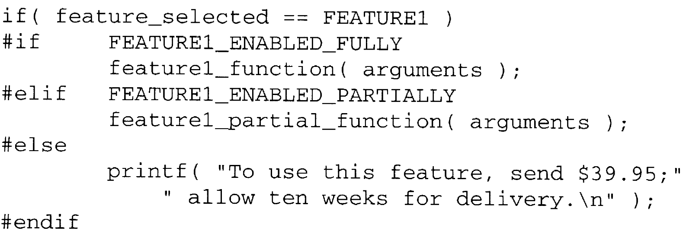

Chapter 14 The Preprocessor
There are many steps involved in compiling a C program. The first step is called preprocessing. The C preprocessor performs textual manipulations on the source code before it is compiled. The major tasks include deleting comments, inserting the contents of #include'd files into the code, defining and substituting #define'd symbols, and deciding whether or not certain parts of the code should be compiled based on conditional compilation directives.
14.1 Predefined Symbols
Table 14.1 summarizes the symbols defined by the preprocessor. The values are all either string literals or decimal constants. __FILE__ and __LINE__ are useful in identifying the source of debugging output. __DATE__ and __TIME__ are often used to encode version information into the compiled program. __STDC__ is used in conjunction with conditional compilation (described later in this chapter) for programs that must be compiled in both ANSI and non-ANSI environments.
Table 14.1 Preprocessor symbols
|
Symbol |
Sample Value |
Meaning |
|---|---|---|
|
__FILE__ |
"name.c" |
Name of the source file being compiled |
|
__LINE__ |
25 |
Line number of the current line in the file. |
|
__DATE__ |
"Jan 31 1997" |
Date that the file was compiled. |
|
__TIME__ |
"18:04:30" |
Time that the file was compiled. |
|
__STDC__ |
1 |
if the compiler conforms to ANSI C, else undefined. |
14.2 #define
You have already seen simple uses of the #define directive that give symbolic names to numeric values. In this section, I'll introduce more uses of #define. Let's start by looking at a more formal description of it.
#define name stuff
Whenever the symbol name appears after this directive, the preprocessor replaces it with stuff.
K&R C
Early C compilers required that the # appear at the beginning of a line, although it could be followed by white space. In ANSI C, this restriction is removed.
The replacement text need not be limited to numeric literal constants. Any text can be substituted into the program with a #define. Here are a few examples:
The first definition merely creates a short alias for the register keyword. This shorter name makes it easier to line up declarations with tabs. The second is a more descriptive synonym for the variant of the for statement that implements an infinite loop. Finally, the last one is a shorthand notation for use with switch statements. It automatically puts a break before each case thus making the switch statement appear to be more like case statements in other languages.
If the stuff in the definition is long, it can be split over multiple lines by ending each line of the definition, except the last one, with a backslash, as in this example:
I'm taking advantage of the fact that adjacent string literals are concatenated in to one string. This type of declaration is useful when debugging a program with many different computations involving a set of variables. It makes inserting a debugging statement to print their current values easier.
CAUTION!
The statement invoking debug_print ends with a semicolon, so you shouldn't have a semicolon at the end of the macro definition. If you do, the result will be two statements—a printf followed by an empty statement. Having two statements will cause problems in contexts where only one statement is allowed, for example:
...
You can also use a #define to insert a sequence of statements into the program. Here is a declaration for an entire loop:
TIP
Don't misuse this technique. If the same code is needed in several areas of the program, it is usually better to implement it as a function. I'll discuss the tradeoffs between #define's and functions in detail later in the chapter.
14.2.1 Macros
The #define mechanism includes a provision to substitute arguments into the text, implementing what are often called macros or defined macros. Here is how macros are declared:
#define name(parameter-list) stuff
The parameter-list is a comma-separated list of symbols that may appear in the stuff. The opening parenthesis of the parameter list must be adjacent to the name. If there is any white space between them, the parameter list will be interpreted as part of stuff.
When the macro is invoked, the name is followed by a comma-separated list of values, one for each parameter, enclosed in parentheses. The actual value given for each parameter is substituted into the stuff whenever the parameter appears.
Here is a macro that takes one parameter:
#define SQUARE(x) x * xIf you put
SQUARE( 5 )in the program after this declaration: the preprocessor substitutes
5 * 5in its place.
CAUTION!
There is a problem with this macro, however. Look at this fragment of code:
a = 5;
printf("%d\n", SQUARE( a + 1 ) );At first glance, you would expect that this code would print 36. In fact, it prints 11. To see why, look at the macro text that is substituted. The parameter x is replaced with the text a + 1, so the statement is actually
printf("%d\n", a + 1 * a + 1 );The problem is now clear: the expression resulting from the substitution is not being evaluated in the intended order.
This error is easy to correct by adding parentheses to the macro definition:
#define SQUARE(x) (x) * ( x )
The preprocessor now substitutes this statement, which has the expected result, in the previous example,
printf("%d\n", ( a + 1 ) * ( a + 1 ) );Here is another macro definition.
#define DOUBLE(x) (x) + (x)
The parentheses are in place to avoid the earlier problem, but a different error can occur with this macro. What value is printed by the following code?
a = 5;
printf("%d\n", 10 * DOUBLE( a ) );CAUTION!
It looks like it should print 100, but in fact it prints 55. Again, the text resulting from the macro substitution reveals the problem:
printf("%d\n", 10 * ( a ) + ( a ) );The multiplication is performed before the addition defined in the macro is completed. This error is also easy to fix: surround the entire expression with parentheses when the macro is defined.
#define DOUBLE(x) ( (x) + (x) )
TIP
All macro definition that evaluate numeric expressions should be parenthesized in this manner to avoid unexpected interactions with operators in the arguments or with operators adjacent to where the macro is used.
Here is an interesting pair of macros:
#define repeat do
#define until(x) while( ! (x) )
These create a "new" loop, which works the same as the repeat/until loop in other languages. It is used like this:
The preprocessor substitutes the following code.
The parentheses around the expression make sure that it is completely evaluated before the ! operator complements its value.
TIP
It is possible to create suites of #define macros in order to write C programs that look like other languages. In most cases, you should avoid this temptation because the resulting programs are difficult for other C programmers to understand. They must constantly look up the definitions to see what is really happening. Even if everyone working on the project now and for the rest of the project's life is familiar with the other language, this technique may cause confusion because of aspects of the other language cannot be mimicked exactly.
14.2.2 #define Substitution
There are several steps involved in expanding #define'd symbols and macros in the program.
1. For macro invocations, the arguments are first examined to see if they contain any #define'd symbols. If so, they are replaced first.
2. The substitution text is then inserted into the program in place of the original text. For macros, the argument names are replaced by their values.
3. Finally, the resulting text is scanned again to see if it contains any #define'd symbols; if so, the process is repeated.
Thus, macro arguments and #define definitions may contain other #define'd symbols. Macros may not be recursive, however.
String literals are not examined when the preprocessor is searching for #define'd symbols. There are two techniques that are useful in injecting macro argument values into string literals. First, the concatenation of adjacent strings makes it easy to break a string into pieces, one of which is actually a macro argument. Here is an example of this technique:
This technique only works if a string literal is given as the macro argument.
The second technique uses the preprocessor to convert a macro argument to a string. The construct #argument is translated by the preprocessor into "argument". This translation lets you write code like this:
which produces this output:
The value of x + 3 is 25The ## construct performs a different task. It causes the two tokens on either side of it to be concatenated. Among other uses, this capability allows macro definitions to construct identifiers from separate pieces of text. The following example uses concatenation to add a value to one of several variables:
The last statement adds the value 25 to the variable sum5. Note that the concatenation must result in a legal construct, otherwise the result is undefined.
14.2.3 Macros versus Functions
Macros are frequently used to perform simple computations, such as finding the larger (or smaller) of two expressions:
#define MAX( a, b ) ( (a) > (b) ? (a) : (b) )Why not use a function to accomplish this task? There are two reasons. First, the code needed to call and return from a function is likely to be larger than the code that actually performs this small amount of work, so the macro makes the program both smaller and faster than using a function.
More important, though, is the fact that a function's parameters must be declared to be a specific type, so it can only be called with expressions of the proper type. On the other hand, this particular macro can be used for integers, longs, floats, doubles, and any other type whose values may be compared with the > operator. In other words, macros are typeless.
The disadvantage to using macros as opposed to functions is that a copy of the code is inserted into the program each time the macro is used. Unless the macro is very short, using macros can greatly increase the size of the program.
There are some tasks that functions simply cannot accomplish. Let's take a closer look at the macro defined in Program 11.1 a. The second argument to the macro is a type, which cannot be passed as a function argument.
#define MALLOC(n, type) \
( (type *)malloc( (n) * sizeof( type ) ) )You can now see exactly how this macro works. The first statement in the following example is converted by the preprocessor to the second statement.
pi = MALLOC( 25, int );
pi = ( ( int * )malloc( ( 25 ) * sizeof( int ) ) );Again, notice that the definition of the macro does not end with a semicolon. The semicolon appears on the statement that invokes the macro.
14.2.4 Macro Arguments with Side Effects
When macro parameters appear more than once in the definition, there is the danger of unexpected results when the macro is used with arguments that have side effects. A side effect is a permanent effect caused by evaluating the expression. For example, the expression
x + 1can be evaluated hundreds of times and the same result will be obtained each time. This expression doesn't have any side effects. But
x++has a side effect: it increments x. The next time this expression is evaluated, it will produce a different result. The MAX macro demonstrates the problems caused by arguments with side effects. Trace the following code. What do you think it will print out?
This problem is not easy. Keep in mind that the first expression in the conditional determines which one of the other two expressions will be evaluated. The other expression is not evaluated at all. The result is x = 6, y = 10, z = 9.
As usual, the strange result becomes clearer by examining the code that is substituted for the macro:
z = ( ( x++ ) > ( y++ ) ? ( x++ ) : ( y++ ) );Although the smaller value is incremented once, the larger value is incremented twice—once during the comparison and again when the expression after the ? is evaluated.
Side effects are not limited only to changing the values of variables. The expression
getchar()has a side effect. Calling the function consumes a character of input, so subsequent calls retrieve different characters. The expression must not be evaluated repeatedly unless the intent is to consume input characters.
Consider the following macro.
It uses the count_one_bits function from Program 5.1 that returns the number of one- bits in its argument. The purpose of the macro is to generate a character with even parity [1] . It first counts the number of ones in the character, and if the result is an odd number the PARITYBIT value (a one-bit) is OR'ed in with the character; otherwise the character is used unchanged. But imagine what happens when the macro is used in this manner:
ch = EVENPARITY( getchar() );The statement looks reasonable: read a character and compute its parity. However, it fails because it actually reads two characters!
14.2.5 Naming Conventions
#define'd macros behave differently than true functions in a number of ways, as summarized in Table 14.2. Because of these differences, it is very important that the programmer knows whether an identifier is a macro or a function. Unfortunately, the syntax for using macros is identical to the syntax for functions, so the language doesn't help highlight the difference.
TIP
This confusion is one reason it is important to adopt a naming convention for macros (and for most other #define'd symbols as well). A common convention is to make macro names all uppercase letters. In the statement
value = max( a, b );it is not apparent whether max is a function or a macro. You have to probe the source file and any header files it included to find out for sure. On the other hand, in
value = MAX( a, b );the naming convention makes it obvious. This convention is especially important in macros that might be used with arguments that have side effects, because it alerts the programmer to the need to evaluate the argument into a temporary variable before using it in the macro.
Table 14.2 Differences between macros and functions
|
Property |
#define macro |
Function |
|---|---|---|
|
Code size |
Macro code is inserted into the program each time the macro is used. Program ends up being larger for all but the smallest macros. |
Function code appears only once; calls to the function appear each time the function is used. |
|
Execution speed |
Faster. |
Extra overhead of function call/return. |
|
Operator precedence |
Macro arguments are evaluated in the context of any surrounding expression; unless parenthesized, the precedence of adjacent operators can yield unexpected results. |
Function arguments are evaluated once when the function is called; the resulting value is passed to the function. Expression evaluation is more predictable. |
|
Argument evaluation |
Arguments evaluated every time they are used in the macro definition; arguments with side effects can produce unexpected results due to multiple evaluations. |
Arguments evaluated only once before function is called; multiple uses of arguments in the function do not cause multiple evaluations. Side effects in arguments do not pose any special problems. |
|
Argument types |
Macros are typeless; work with any argument type for which the operations performed are legal. |
Function arguments are typed; separate functions are needed for different argument types even if the work performed is identical. |
14.2.6 #undef
This directive un-#define's a name by removing its definition.
#undef name
If an existing name is to be redefined, the old definition must first be removed with #undef.
14.2.7 Command Line Definitions
Many C compilers provide the ability to define symbols on the command line that initiates the compilation. This feature is useful when compiling different versions of a program from the same source file. For example, suppose a particular program declares an array of a certain size. On machines with limited memory the array must be small, but on machines with lots of memory you'd prefer to make the array larger. If the array is declared using a symbol like this,
int array[ARRAY_SIZE];then the value for ARRAY_SIZE can be given on the command line when the program is compiled.
On UNK compilers, the -D option does this job. There are two ways to use this option.
-Dname
-Dname=stuff
The first form defines the symbol name to have the value one. The second form defines the symbol's value to be the stuff after the equal sign. The Borland C compilers for MS-DOS provide the same capability with the same syntax. Consult your compiler's documentation for information about your system.
To return to our example, the command line to compile this program on a UNIX system might look like this:
cc –DARRAY_SIZE=100 prog.cThis example illustrates another benefit that you get by parameterizing quantities such as array sizes in the program. If the array size were given as a literal constant in the declaration, or if the array were ever accessed within a loop that used a literal constant as a limit, the technique would not work. The symbolic constant must be used wherever you need to reference the size of the arrays.
Compilers that offer command-line definition of symbols usually offer command-line un-definition of symbols. On UNIX compilers, the -U option performs this. Specifying -Uname causes the initial definition of name in the program to be ignored. This feature is useful in conjunction with conditional compilation.
14.3 Conditional Compilation
It is often handy to be able to select whether certain statements or groups of statements should be translated or ignored when compiling a program. Statements used solely in the debugging of a program are an obvious example. They should not appear in production versions of the program, yet you would rather not physically remove them from the source code as they might be needed for debugging again after the program has undergone some maintenance modifications.
Conditional compilation is perfect for this purpose. With conditional compilation, selected parts of the code can be either compiled normally or completely ignored. The basic construct to support conditional compilation is the #if directive with its matching #endif. The syntax for its simplest form is shown below.
#if constant-expression
statements
#endif
The constant-expression is evaluated by the preprocessor. If its value is nonzero (true), then the statements are compiled normally; otherwise the preprocessor silently deletes them.
A constant expression is on whose terms are either literal constants or #define'd symbols. Variables that do not attain their values until execution time are not legal in constant expressions because their values cannot be predicted at compile time.
For example, bracketing all your debugging code like this:
makes it easy to either compile or ignore the code. To compile it,
#define DEBUG 1would be used. To ignore it, this symbol would be defined as 0 instead. The code remains in the sources file in either case.
Another use of conditional compilation is to select between different alternatives when compiling. To support this capability, the #if directive has optional #elif and #else clauses. The complete syntax looks like this:
There may be any number of #elif clauses. The constant-expression in each is evaluated only if none of the previous ones are true. The statements in the #else clause are compiled only when all of the expressions are false, otherwise they are ignored.
K&R C
The original K&R C did not have an #elif directive. However, directives can be nested to achieve the same result with such compilers.
The following example is from a program that is sold in several different versions. Each version has a different set of optional features. The challenge in writing this code was figuring out how to produce the various versions. You must avoid at all costs writing a different set of source files for each version! Most of the code in each set would be identical and maintaining the program would be a nightmare. Fortunately, conditional compilation does the job.

There is only one single set of source files. When they are compiled, symbols for each of the desired features (or feature levels) are defined as one, and the remaining symbol are defined as zero.
14.3.1 If Defined
It is also possible to test whether or not a symbol is defined. This task is often more convenient for conditional compilation because the symbol controlling the compilation need not be defined at all unless the feature it controls is wanted. This test can be made in any of the following ways:
The members of each of these pairs are equivalent to each other, but the #if form is more versatile because the constant expression may contain additional terms, as in:
#if X > 0 || defined( ABC ) && defined( BCD )K&R C
Depending upon how old they are, some K&R C compilers may not include all of this capability.
14.3.2 Nested Directives
These directives may be nested within one another, as in the following code fragment:
In this example, the choice of operating systems determines which alternatives are available for the different options. The example also illustrates that preprocessor directives may be indented for readability by preceding them with white space.
To help the reader keep track of complicated nested directives, it is helpful to label each #endif with the expression from the #if to which it applies. This practice is particularly useful when the enclosed statements are lengthy. For example:
Some compilers allow a symbol to appear on an #endif directive, even though it has no effect. The Standard doesn't mention the legality of this practice, so it is safer to use a comment.
14.4 File Inclusion
As you have already seen, the #include directive causes the contents of another file to be compiled as if they actually appeared in place of the #include directive. The way this substitution is performed is simple: the preprocessor removes the directive and substitutes the contents of the named file. Thus, a header file that is included into ten other source files is actually compiled ten times.
TIP
This fact suggests that using #include files involves some overhead, but there are two very good reasons why you should not worry about it. First, there is actually not much extra overhead. If a set of declarations is needed in two source files, it will take nearly the same amount of time to compile those source files if the declarations are duplicated as it would if the declarations were #include'd in the files. Also, the overhead occurs only when the program is being compiled, so runtime efficiency is not affected. More importantly, though, the advantages of having the declarations in a header file are significant. They do not have to be replicated in every file in which they are needed, so maintaining them is easier.
TIP
The fact that everything in the header file is compiled each time it is #include'd suggests that each header file should only contain declarations for one set of functions or data. It is better to use several header files, each containing the declarations appropriate for a particular function or module, than to put all of the declarations for a program in one giant header file.
TIP
The principles of program design and modularity support this approach as well. It is better to include into a file only the necessary declarations so that the statements in the file cannot accidentally access functions or variables that should be private. Also, it is easier to maintain a set of declarations if you don't have to wade through hundreds of lines of unrelated code to find them.
14.4.1 Library Includes
The compiler supports two different types of #include's: library files and local files. In fact, there is little difference between them.
Library header files are included using the following syntax.
#include <filename>
There aren't any restrictions on the filename, although by convention the names of the standard library header files end with a .h suffix [2] .
The compiler searches for library header files by looking a "series of standard locations" defined by the implementation. The documentation for your particular compiler should indicate what the standard locations are and how you can change them or add other locations to the list. For example, C compilers on UNIX systems typically look for library header files in a directory called /usr/include. A command line option to the compiler lets you add additional directories to this list so that you can create your own libraries of header files. Again, consult your compiler's documentation to see how your system behaves.
14.4.2 Local Includes
Here is the other form of the #include directive.
#include "filename"
The Standard lets each implementation decide whether to treat the local form of #include differently than the library form. If any special processing that is provided for the local form fails for a given file, then the compiler searches for the file as if a library #include had been used. A common strategy for processing local includes is to look in the current directory for the file. If the file is not found, then the standard locations are searched as usual.
You can write all of your #include statements with quotation marks instead of angle brackets. However, some compilers would waste a small amount of time when trying to locate library include files. A better reason to use the angle bracket form for library files is the information that it gives the reader. The angle brackets make it obvious that
#include <errno.h>references a library file. With the alternate form
#include "errno.h"it is not clear whether the library header or a local file of the same name is being used. The only way to find out for sure is to examine the directory in which the compilation is performed.
A variant supported on Unix systems and the Borland C compilers is the absolute pathname, which identifies not only the name of a file but its location. An absolute pathname on a UNIX system begins with a slash, like this:
/home/fred/C/my_proj/declaration2.hOn MS-DOS systems, backslashes are used instead of slashes. If an absolute pathname is used in either form of #include, then the usual directory searching is skipped because the pathname specifies the location of the file.
14.4.3 Nested File Inclusion
It is possible to put #include directives in files that are included. For example, consider a collection of functions that read input and then perform various input validation tasks. The validated data is then returned. When end of file is reached, the constant EOF is returned instead.
Prototypes for these functions would be put in a header file and #include'ed into each source file that uses the functions. However, every file that uses these functions must also include stdio.h to get the declaration for EOF. Therefore, the header file containing the prototypes may also contain:
#include <stdio.h>so that including the header file automatically brings in the standard I/O declarations as well.
The Standard requires that nested #include files be supported to a depth of at least eight, but it doesn't impose a maximum limit on nesting depth. In practice, there is little reason to nest #include's to depths greater than one or two.
TIP
A disadvantage of nested #include files is that they make it difficult to determine the true dependencies of source files on one another. Some programs, such as the UNIX make utility, must know these dependencies in order to determine which files need to be compiled after some files are modified.
Another disadvantage of nested #include's is the possibility of one header file being included multiple times. To illustrate this error, consider this code:
#include "x.h"
#include "x.h"It is obvious here that the file x.h is being included twice. No one would ever write this code intentionally. But this code
#include "a.h"
#include "b.h"seems fine. If both a.h and b.h contain a nested #include of x.h, then x.h is once again being included twice, only this time it is not as obvious.
Multiple inclusion occurs most often in larger programs with a multitude of header files, thus it is not easy to find. A simple solution to the problem is provided by the conditional compilation feature. If all header files are written as:
then the risks of multiple inclusion are eliminated. The first time the header file is included, it is processed normally and the symbol _HEADERNAME_H is defined to be one. If the header is included again, its entire contents are ignored by the conditional compilation directives. The symbol _HEADERNAME_H is named after the filename of the include file in order to avoid conflicts with similar symbols in other header files.
Note that the definition in the previous example can also be written
#define _HEADERNAME_Hwith exactly the same effect. Even though its value is now the empty string rather than "1", the symbol is still defined.
Keep in mind, though, that the preprocessor must still read the entire header file, even if the whole file is ignored. Because this processing slows down compilation, multiple inclusion, whether by nested #include's or not, should be avoided when possible.
14.5 Other Directives
There are a few additional directives supported by the preprocessor. First, the #error directive lets you generate error messages when the program is compiled. Here is its syntax:
#error text of error message
The following code fragment shows how you might use this directive.
Somewhat less useful is the #line directive, which has this form:
#line number "string"
It informs the preprocessor that number is the line number of the next line of input. If the optional "string" is given, the preprocessor takes it as the name of the current file. Specifically, this directive modifies the value of the __LINE__ symbol and, optionally, the __FILE__ symbol as well.
This directive is most often used in programs that translate other languages to C code. Error messages produced by the C compiler can reference the file name and line numbers of the original source file instead of the intermediate C source file produced by the translating program.
The #pragma directive is a mechanism that supports implementation-dependent directives. Its syntax is implementation dependent. An environment may provide #pragma's to allow options or other processing not available any other way. For example, some compilers use #pragma's to turn listings on or off during compilation or to insert assembly code into C programs. Pragmas are inherently not portable. Unrecognized #pragma directives are ignored by the preprocessor, and two different compilers might interpret the same #pragma in different ways.
Finally, the null directive is a line that begins with a pound sign but contains nothing else. These directives are simply deleted by the preprocessor. The null directives in the following example emphasize the #include directive by separating it from the surrounding code.
The same effect can be achieved with blank lines.
14.6 Summary
The first step in compiling a C program is to preproeess it. The preprocessor maintains five symbols, which are described in Table 14.1.
The #define directive attaches a symbolic name to an arbitrary sequence of characters. For example, these characters may be literal constants, expressions, or program statements. The sequence is terminated by the end of the line. Long sequences of characters may be split over multiple lines by ending each line except the last one with a backslash. Macros are defined sequences into which argument values are substituted. When a macro is invoked, values are given for each of its arguments. To prevent errors with macros that may appear in egressions, surround the entire definition of the macro with parentheses. Also, surround each occurrence of the macro parameters in the definition with parentheses. #define may be used to "rewrite" the C language so that it resembles another language.
The #argument construct is converted by the preprocessor into the string literal "argument". The ## operator concatenates the text appearing on each side of it.
Some tasks can be implemented with both macros and functions. However, macros are typeless, which can be an advantage. Macros execute faster than functions because there is no overhead used calling or returning from the function, however using macros rather than functions usually increases the size of the program. Also, arguments with side effects can cause unexpected results with macros. The behavior of these arguments with functions is more predictable. Because of these differences, it is important to use a naming convention that lets the programmer determine whether an identifier is a function or a macro.
With many compilers, symbols can be defined from the command line. The #undef directive causes the initial definition for a name to be ignored.
You can create different versions of a program from a single set of source files by using conditional compilation. The #if directive either includes or ignores a sequence of code according to the result of a compile-time test. When the #elif and #else directives are also used, you can select one of several sequences of code to compile. In addition to testing constant expressions, these directives can test whether or not symbols are defined. The #ifdef and #ifndef directives also perform this task.
The #include directive performs file inclusion. It has two forms. If the filename is enclosed in angle brackets, the compiler searches for the file in an implementation- defined standard place. This form is usually used when including library headers. In the other form, the filename is enclosed in quotation marks. Each implementation may process this form differently. However, if any special processing for this form fails to locate the file, then the standard place is searched instead. This form is usually used for including files that you have written. File inclusion may be nested, though there is usually little need for nesting that is more than one or two levels deep. Nested includes increase the risk of including a file more than once, and make it harder to determine which include files a given source file depends on.
The #error directive generates an error message at compile time containing text of your choice. The #line directive allows you to tell the compiler the line number of the next line of input and, optionally, the name of the file it came from. The implementation-dependent #pragma directive allows compilers to provide nonstandard processing such as inserting inline assembly code into a function.
14.7 Summary of Cautions
1. Do not put a semicolon at the end of a macro definition that forms an entire statement (page 385).
2. Using macro arguments in the definition without surrounding them with parentheses (page 386).
3. Not surrounding the entire macro definition with parentheses (page 387).
14.8 Summary of Programming Tips
1. Avoid using a #define for long sequences of code that can be implemented as a function (page 385).
2. In macros that evaluate expressions, parenthesize all occurrences of the macro arguments, and surround the entire definition with parentheses (page 387).
3. Avoid using #define macros to create a new language (page 387).
4. Adopt a naming convention that makes it obvious when a #define macro is being used (page 391).
5. Use file inclusion wherever it is appropriate; do not worry about overhead (page 397).
6. A header file should only contain declarations for one set of functions and/or data (page 397).
7. Separate header files for different sets of declarations improves information hiding (page 397).
8. Nesting #include files makes it more difficult to determine the dependencies among source files (page 399).
14.9 Questions
 1. The preprocessor defines five symbols that
give the name of the file being
compiled, the current line number in that file, the current date and time, and
whether the compiler is an ANSI compiler. Name one way in which each of these
symbols might be useful.
1. The preprocessor defines five symbols that
give the name of the file being
compiled, the current line number in that file, the current date and time, and
whether the compiler is an ANSI compiler. Name one way in which each of these
symbols might be useful.
2. Name two advantages of using #define'd names in place of literal constants.
3. Write a macro for debugging that will print arbitrary expressions. It should be called with two arguments. The first is a printf format code, and the second is the expression to be printed.
4. What will the following program print? Be sure to expand the #define's carefully!
5. The putchar function is defined in the file stdio.h as a macro, despite the fact that it is fairly long. Why do you think it was defined this way?
6. What, if anything, is wrong with the
following program fragment?
7. What, if anything, is wrong with the
following program fragment?
8. What, if anything, is wrong with the following code fragments?
在文件header1.h中:
#ifndef _HEADER1_H
#define _HEADER1_H
#include "header2.h"
other declarations
#endif
在文件header2.h中:
#ifndef _HEADER2_H
#define _HEADER2_H
#include "header1.h"
other declarations
#endif9. In an attempt to improve portability, one programmer wrote the following declarations.
What, if anything, is wrong with them?
14.10 Programming Exercises
★★ 1. The company you are working for markets
a
program that handles financial
transactions and prints reports about them. To broaden the potential market, the
program is sold in several editions, each with various combinations of options—
the more options, the higher the price. Your task is to implement the code for a
certain printing function so that it can be easily compiled to produce the different
versions of the program.
Your function will be named print_ledger. It takes a single int argument, and does not return any value. It should call one or more of the following functions depending on which (if any) symbols are defined when the function is compiled.
|
If this symbol is defined… |
Then you call this function. |
|---|---|
|
OPTION_LONG |
print_ledger_long |
|
OPTION_DETAILED |
print_ledger_detailed |
|
(neither) |
print_ledger_default |
Each of these functions also takes a single int argument. Pass the value you received to whichever function(s) you call.
★★ 2. Write a function that returns a value indicating the type of computer on which it is running. The function will he used in a program that runs on a wide variety of computers.
We will use conditional compilation to accomplish this magic. Your function should be called cpu_type, and should not take any arguments. When your function is compiled, one of the symbols in the "Defined" column of the table below may be defined. Your function should return the corresponding symbol from the "Returned" column. If none of the symbols in the left column were defined, then the value CPU_UNKHOWN should be returned. If more than one of the symbols was defined, the result is undefined.
|
Defined |
Returned |
|---|---|
|
VAX |
CPU_VAX |
|
M68000 |
CPU_68000 |
|
M68020 |
CPU_68020 |
|
I80386 |
CPU_80386 |
|
X6809 |
CPU_6809 |
|
X6502 |
CPU_6502 |
|
U3B2 |
CPU_3B2 |
|
(none) |
CPU_UNKNOWN |
The symbols in the "Returned" column will be #define'd as various integer values in an include tile called cpu_types.h.
[1] Parity is an error detection mechanism. Before data is stored or transmitted over a communications line, a parity bit is computed with a value that makes the total number of one-bits an even number. Later, the data can be verified by counting the number of one-bits; if the result is odd, an error has occurred. This technique is called even parity. Odd parity works the same way, except that the parity bit is computed so that the total number of one-bits is an odd number.
[2] Technically, library header files need not be stored as files at all, though this won't be apparent to the programmer.